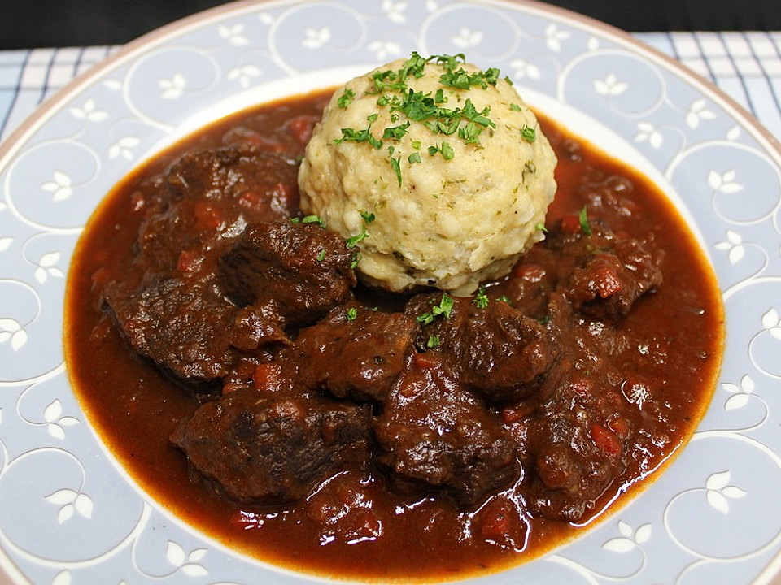

Rindsgulasch

Saftiges Gulasch
Mit seinem herzhaften Geschmack und seiner würzigen und sämigen Sauce ist das Gulasch ein kulinarischer Genuss für jeden Fleischliebhaber. Ob als feuriges ungarisches Gulasch oder aus der traditionellen Wiener Küche - das beliebte Gericht erlaubt unzählige Zubereitungsmöglichkeiten.
Benötigte Zutaten
- 1 Zwiebel
- 1 Zehe/n Knoblauch
- 300g Gulasch (Rind, Wadschinken), 2-3 cm groß gewürfelt
- 1 Paprikaschote(n), rote
- 1 Tomate(n)
- Tomatenmarkt
- n.B. ÖL oder Butterschmarl
- n.B. Brühe
Salz, Pfeffer, Kümmel, Zucker
Schritte für die Zubereitung
- Das Rezept beginnt nämlich damit, dass man eine (ja, richtig gelesen) Zwiebel fein schneidet.
Dann erhitzt man das Fett in einem Schmortopf und brät die Zwiebelstückchen sachte an.
Gut rühren, es soll nichts braun werden.
- Die Fleischwürfel kommen nach einiger Zeit dazu. Hitze etwas aufdrehen.
Nun wirklich gut rühren, damit das Fleisch gleichmäßig angebraten wird, ohne Wasser abzugeben (das den Bratvorgang beeinträchtigen würde).
Das Fleisch darf ruhig gut Farbe annehmen.
- Als nächstes kommt das Tomatenmark dazu - drüber geben, gut verrühren, weiterrühren und weiter anbraten.
Eine Prise Zucker kommt nun auch dazu. Hitze nun wieder dringend herunter drehen.
- Nun das Paprikapulver dazugeben - Sorte nach Belieben und gewünschtem Schärfegrad und unterrühren.
Wer mag, kann nun noch Kümmel dazugeben (muss aber nicht).
Das Paprikapulver auf keinen Fall rösten lassen (es wird sonst bitter!) sondern gleich mit dem Rotwein ablöschen.
- Einkochen lassen, dabei immer wieder einmal umrühren.
Nun kommen die in kleine Würfel geschnittene Paprikaschote und Tomate dazu. Einfach unterrühren.
- Ganz langsam nach und nach mit Brühe aufgießen, immer nur einen Schöpflöffel voll.
Einkochen lassen, dann wieder aufgießen. Und immer wieder rühren.
Und das kann mindestens 1 bis 1 1/2 Stunden so weitergehen, im Idealfall nimmt man sich zwischen 2 und 3 Stunden Zeit (und entsprechend viel Brühe).